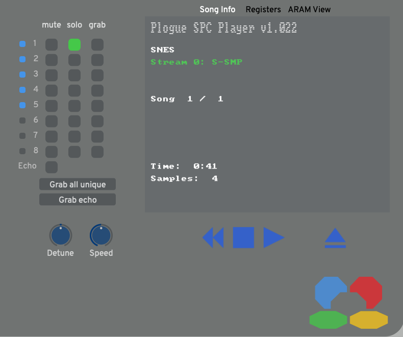
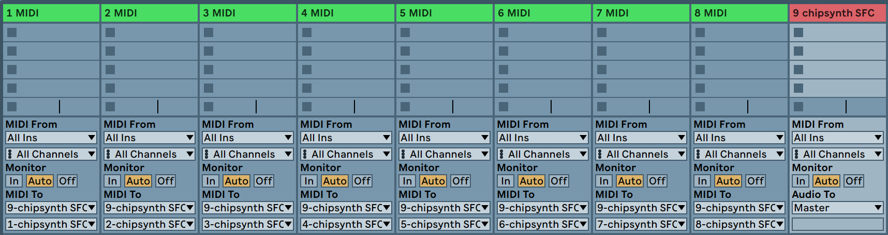
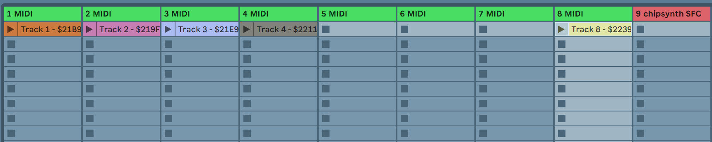
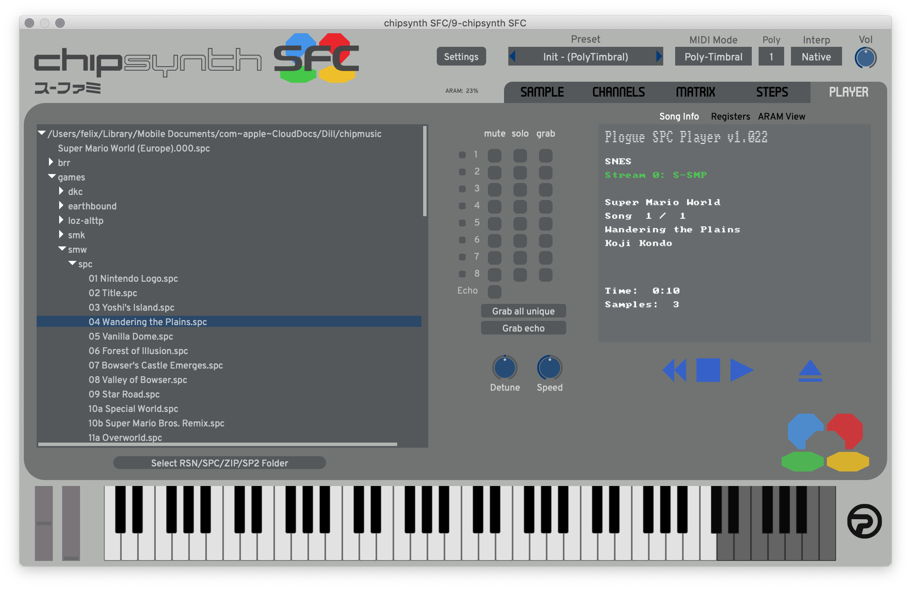
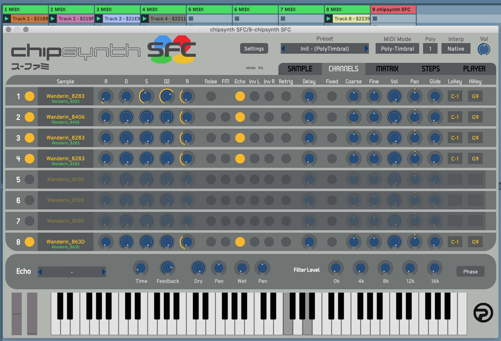

Recreating SNES Music with Chipsynth SFC
October 20, 2020
I always get nostalgia when listening to the soundtracks of the SNES, for example:
I transcribed many of those here
Chipsynth SFC
Recently, Chipsynth SFC was released, which brings a really accurate emulation of the SNES soundchip to VST or standalone format. It reminds me of C700 VST, but it seems much more stable and thought out. To see the hard work that went into it, check out this video.
SPC files
Music on the SNES is packaged to SPC files, which can either be ripped using an emulator or, more much easier, downloaded from Zophars Music Domain. They can directly be played with Chipsynth SFC, or with external software like Audio Overload and SPC700 Player. While Audio Overload is easier to use, SPC700 Player displays more in depth information, but more on that later..
Tracks & Samples
An SPC file contains up to 8 tracks where each can play 1 of 16 samples at a time. It is quite common for tracks to switch samples wihle playing to achieve more versatile output. Using a player, you can listen to individual tracks, which is good to analyze or transcribe a tune:
 chipsynth player
Generating MIDI from an SPC file
For some SPC files, it is possible to generate midi! Checkout these links to download converters for many SPC flavours. For example to convert a nintendo flavoured SPC, you can use nintspc:
for f in *.spc; do "path/to/nintspc" "$f" "$f.mid" --loop 1;done
The generated midi files will contain up to 8 tracks that represent the notes SPC tracks. The selection of the correct samples & effects has to be done by hand.
Recreating a soundtrack with a DAW + chipsynth SFC
The generated (or self transcribed / composed) MIDI can now be used inside a DAW for playback with chipsynth sfc. I am using Ableton, but any DAW that allows routing MIDI messages should work.
For the start, I recommend using a more simple tune without instrument switches or fancy effects. In this example, I am using "04 Wandering the Plains" from Super Mario World.
Track Setup
First, we need to prepare the DAW to be able to send multiple MIDI tracks to the chipsynth. We will use PolyTimbral mode which means we have only a single instance of chipsynth SFC. This is similar to how the real nintendo soundtracks were made.
- create 2 MIDI tracks, and add chipsynth SFC (use VST3 version!) to the second track.
- Set "Midi To" of the first track to "chipsynth SFC".
- Duplicate the first track until you have 8 MIDI tracks + the one with the chipsynth
- Now for each of the first 8 tracks' "MIDI To", change "Track In" to "N-chipsynth SFC", where N is the MIDI tracks number
- Open chipsynth SFC and select preset "Poly-Timbral > Init".
 This is how it should look like
That's it! You can now save this project as a template so you don't have to set this up again.
Import MIDI
To import a MIDI file to the tracks, drag and drop the file to the first MIDI track. If there are less than 8 clips, move each clip to its correct track:

Import Samples
- open chipsynth SFC on the last track and select the Player Tab
- select the folder with your SPCs
- open the SPC file that was used to generate your MIDI

- Before you continue, make sure you have no samples (press clear in the first tab).
- Now, press play and then "Grab all unique" + "Grab echo". This should populate up to 8 samples.
- Now you need to select the correct sample for each channel. To find out which is where, you can simply solo a track and then find the sound in the sample tab (press keyboard key to hear the selected sample).
- Press play to hear the magic:

Fine Tuning
Hopefully, the import went right and you are now hearing a more or less accurate soundtrack. To really push the envelope (sry), we now need to find out the correct ADSR / volume / pitch for each channel. This can be figured out by listening closely to the spc tracks, trying to match up each channel. If you've started with a simple file (like me), this process should be a matter of 1-2 minutes.
So what?
Now you know how to take apart an original SNES composition and put it back together in a modern environment. Of course this is just the starting point, from here you can learn from existing tracks, alter them or create brand new ones.. For me, this is mostly a combination of nostalgia and the urge to learn about music composition + arrangement.
I'll close this one with an "slightly" altered version of the Donut Plains: